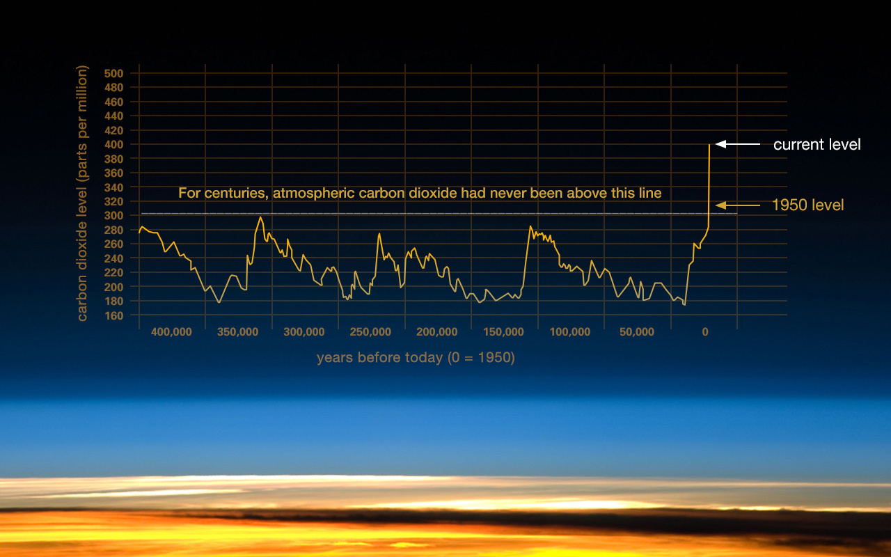
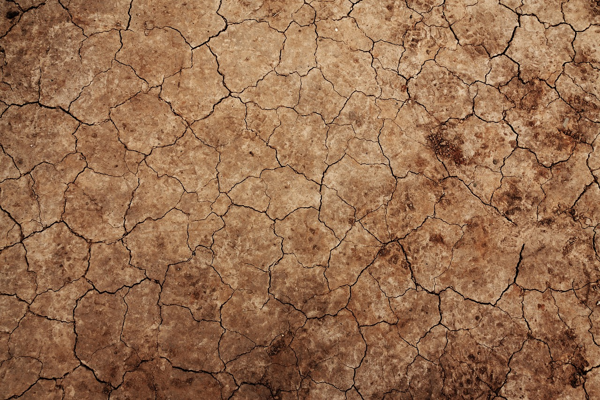

Le réchauffement climatique est un phénomène global de transformation du climat caractérisé par une augmentation générale des températures moyennes (principalement causé par l’être humain), et qui modifie irréversiblement les équilibres météorologiques et les écosystèmes de la planète. Lorsque l’on parle du réchauffement climatique aujourd’hui, il s’agit du phénomène d’augmentation des températures qui se produit sur Terre depuis 100 à 150 ans. Donc, environ depuis le début de la Révolution industrielle. Depuis ce temps, les températures moyennes sur terre ont en effet augmenté plus ou moins régulièrement. En 2016, la température moyenne sur la planète terre était environ 1 à 1,5 degré au-dessus des températures moyennes de l’ère préindustrielle (avant 1850), ce qui est très alarmant.(voir graphique ci-dessous). Et tout cela est causé à cause des excès de co2 que nous produisons.
(Credit: Vostok ice core data/J.R. Petit et al.; NOAA Mauna Loa CO2 record.)
Dans les années 60, plusieurs scientifiques vont montrer que les présomptions sur l’effet de serre s’avèrent en fait réelles. Charles David Keeling prouve par exemple que la concentration de CO2 dans l’atmosphère augmente progressivement grâce à ses mesures près de Hawaï. Roger Revelle prouva que le carbone dégagé par la combustion d’énergie fossiles n’était pas immédiatement absorbé par l’océan. Les scientifiques commencent à se préoccuper de plus en plus du réchauffement climatique, et de ce fait, la société politique va commencer à prendre en compte ce problème. En 1971 le premier Sommet de la Terre évoque pour la première fois dans une grande conférence la définition du réchauffement climatique et ses conséquences. En 1972, John Sawyer publie un rapport scientifique mettant en évidence de façon de plus en plus claire les liens entre le réchauffement climatique et l’effet de serre. Pendant encore plus d’une décennie, les preuves du réchauffement climatique s’accumulent dans la communauté scientifique au point qu’au milieu des années 1980, les 7 plus grandes puissances économiques mondiales (le G7) demandent à l’ONU de créer un groupe d’experts chargés d’étudier la question. C’est la première fois qu’il y a une vraie prise en compte et une vraie définition du réchauffement climatique comme problème public par les institutions internationales.
(credit text:https://e-rse.net/definitions/definition-rechauffement-climatique/#gs.qRLtXf8)
(Il faut se reveiller, car notre sol pourait devenir comme sur cette photo....)
Le réchauffement climatique est, de nos jours, l’enjeu planétaire le plus alarmant. Depuis les années 80, nous sommes confrontés à un enjeu dévastateur mettant la vie de tous les écosystèmes planétaires dans une situation critique. Les spécialistes s’entendent tous pour dire que si les humains ne changent par leurs habitudes de vie de manière drastique, les conséquences engendrées pourraient se révéler catastrophiques. Le réchauffement climatique a déjà causé son lot de problème sur terre. Les eaux des océans s’acidifient de plus en plus mettant à risque des millions d’espèces maritimes causant une famine de plus en plus prononcés dans les pays du tiers monde. Mais ce n’est pas tout. Puisque la majorité des eaux acidifiées s’agite d’eau douce, cela réduis considérablement et à un rythme ahurissant la réserve d’eau potable sur terre. Les changements climatiques sont causés en majeur parti par les émanations de CO2 faites par l’être humain. Ses fortes émanations ont engendré la fonte des grands glaciers du nord. Cela va créer une montée des eaux, ce qui aura comme conséquence de fortes inondations ainsi que l’augmentation de catastrophe naturelle telle que des tsunamis, des ouragans ou même des typhons. Cela risque de toucher toutes les régions côtières ainsi que les villes en basses altitudes. Bref, le changement climatique est un problème colossal ayant un lot de conséquence considérable. Il faut adopter des changements, et il faut le faire rapidement.